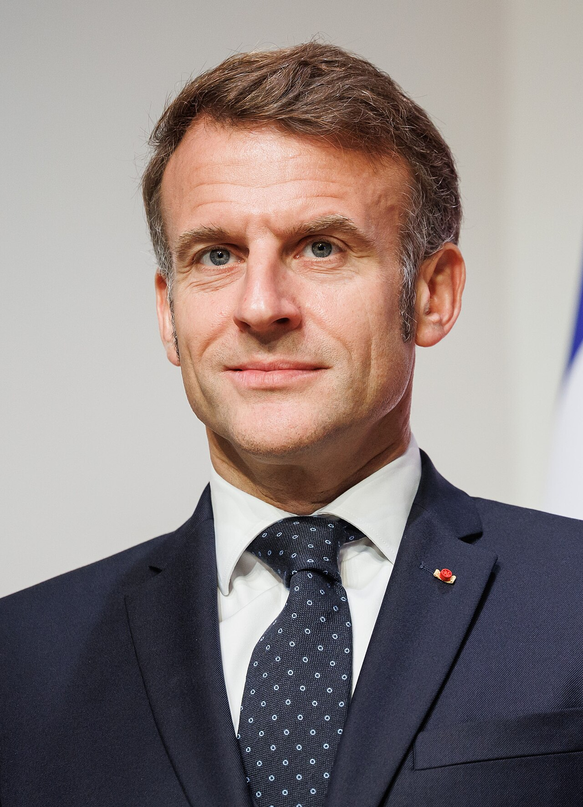

CityLoop Quest Gand


Le printemps donne à Gand une lumière changeante et des jardins en pleine reprise. Avril et mai sont agréables pour marcher longtemps, même si les averses restent fréquentes. Les arbres du Citadelpark, le jardin botanique et les espaces naturels autour de la ville prennent alors une place plus visible. Les week-ends de beau temps attirent déjà beaucoup de visiteurs ; commencer tôt permet de profiter du Graslei avant les groupes.
L’été apporte de longues soirées et la période la plus animée. En juillet, les Gentse Feesten remplissent le centre pendant dix jours. C’est une expérience culturelle exceptionnelle, mais elle transforme les déplacements, le sommeil et l’accès aux restaurants. Ceux qui recherchent le calme choisiront une autre semaine ; ceux qui aiment concerts et théâtre de rue doivent réserver leur hébergement longtemps à l’avance. En dehors des fêtes, les quais restent très fréquentés dès que le soleil apparaît.
L’automne convient particulièrement aux musées et aux promenades urbaines. Les couleurs du Citadelpark, les brumes sur la Lys et une lumière plus basse donnent du relief aux façades. Septembre conserve souvent des températures douces, tandis que novembre devient plus humide et sombre. Une alternance entre extérieur et visites intérieures permet alors de profiter de la ville sans subir la météo.
L’hiver réduit les foules et révèle les éclairages du centre. Les marchés et décorations de fin d’année créent une atmosphère chaleureuse, mais les journées sont courtes et le vent près de l’eau peut être mordant. Certains jardins, monuments ou établissements adaptent leurs horaires. Les matinées froides sont idéales pour les rues presque vides ; l’après-midi peut être consacré à un musée, puis la soirée aux façades illuminées.
À l’échelle d’une journée, trois moments se distinguent. Avant 9 heures, les quais appartiennent surtout aux habitants, livreurs et étudiants. En fin d’après-midi, la lumière atteint souvent mieux les façades du Graslei selon la saison. Après la tombée du jour, le plan lumière souligne tours, ponts et monuments avec sobriété. Consulter la météo et les horaires réels reste plus utile qu’appliquer une règle fixe, car Gand change vite sous les nuages.
La journée elle-même possède plusieurs visages. Avant 9 heures, les quais offrent une lumière douce, des livraisons et quelques cyclistes pressés ; c’est le meilleur moment pour photographier les alignements de façades. En milieu de journée, les places sont plus animées et les musées offrent une respiration. En fin d’après-midi, le soleil peut éclairer le Graslei de manière spectaculaire selon la saison. Après la tombée de la nuit, le plan lumière relie monuments et ponts dans une atmosphère beaucoup plus calme hors des grands événements.
Le calendrier culturel mérite d’être consulté avant de réserver. Concerts, festivals de cinéma, expositions, compétitions sportives et congrès peuvent remplir les hébergements sans que le visiteur en connaisse la raison. À l’inverse, une exposition temporaire au MSK, au S.M.A.K. ou au GUM peut justifier de déplacer la visite d’une semaine. Aucun mois n’est parfait pour tout : juillet offre la fête, l’hiver les musées tranquilles, le printemps les jardins et septembre un bel équilibre entre lumière, activité universitaire et fréquentation modérée.
La météo flamande recommande enfin une stratégie plutôt qu’une inquiétude. Une averse courte peut vider une place, nettoyer les pavés et offrir dix minutes plus tard des reflets magnifiques. Un vêtement imperméable léger est plus utile qu’un parapluie encombrant dans les rues animées. Les températures modérées favorisent la marche, mais l’humidité rend le froid hivernal plus mordant. En gardant une visite intérieure et un café de repli, on transforme les changements de ciel en rythme de découverte. Les jours de marché ajoutent un autre calendrier : fleurs sur la Kouter le dimanche, livres d’occasion près de l’Ajuinlei et produits frais autour des places centrales. Arriver avant midi permet de voir ces rendez-vous en pleine activité, puis de profiter d’un centre plus calme après le démontage des étals.